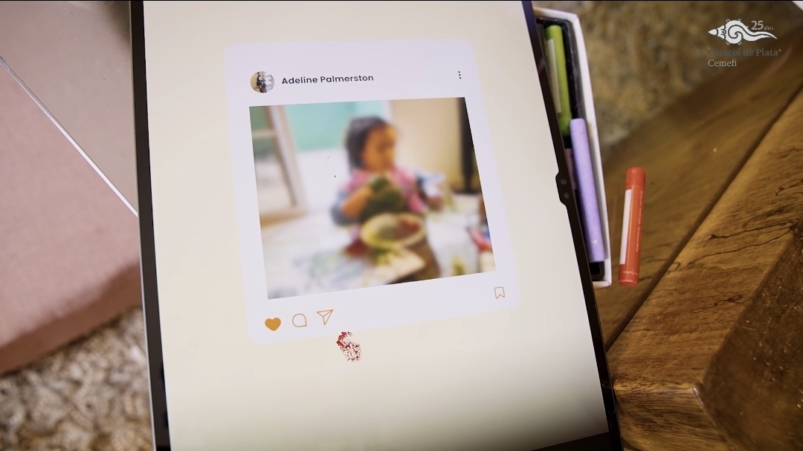
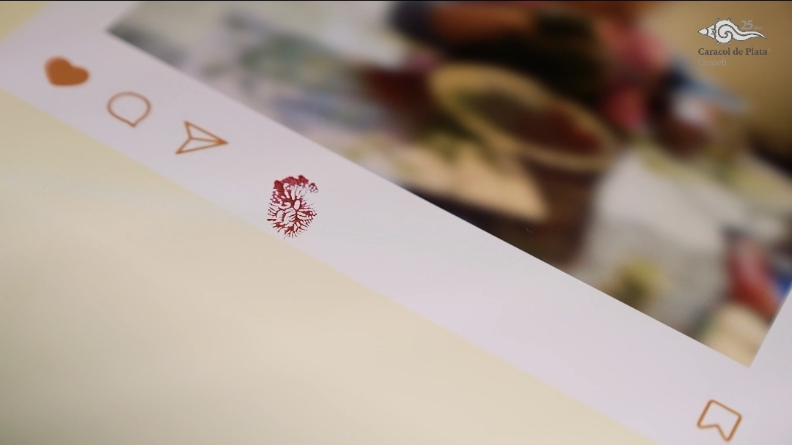
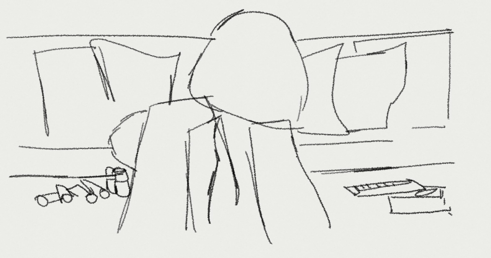
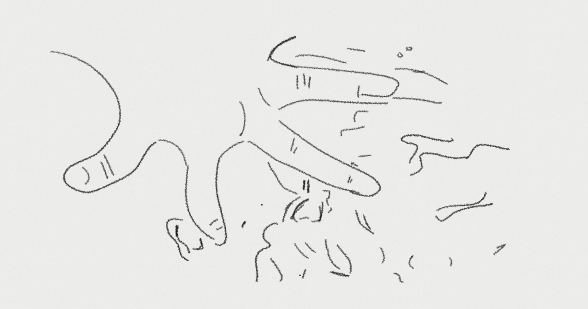
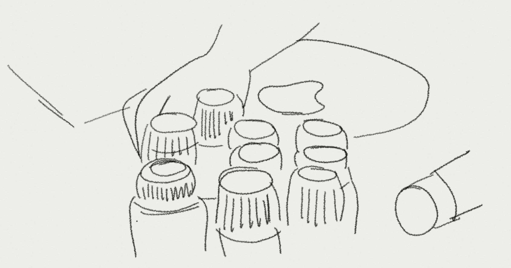
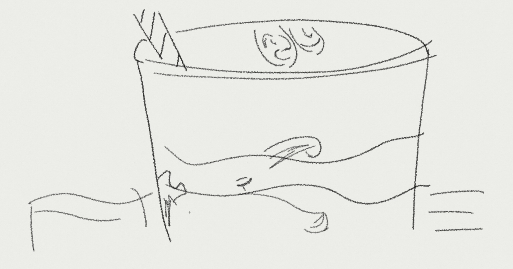
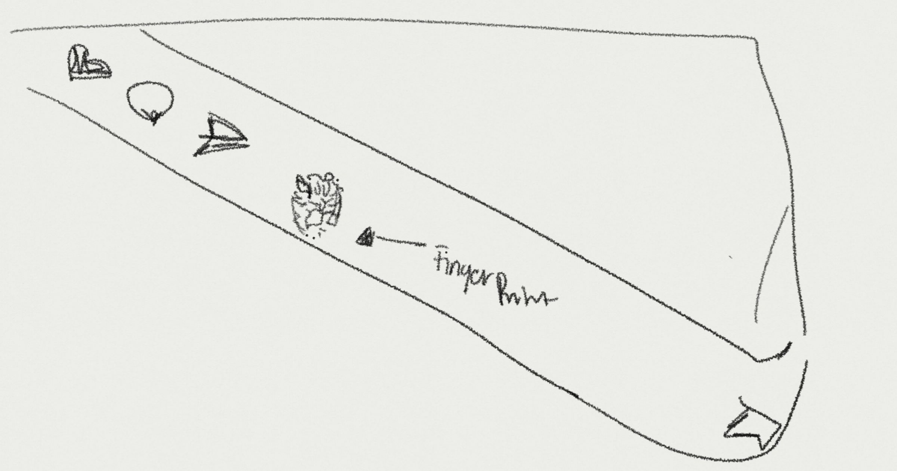
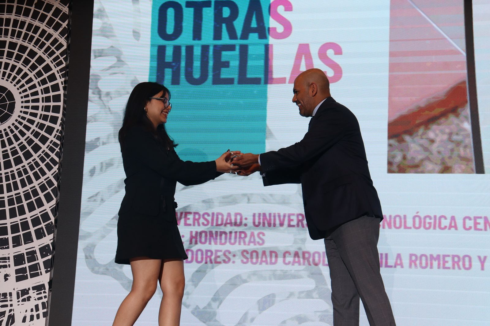
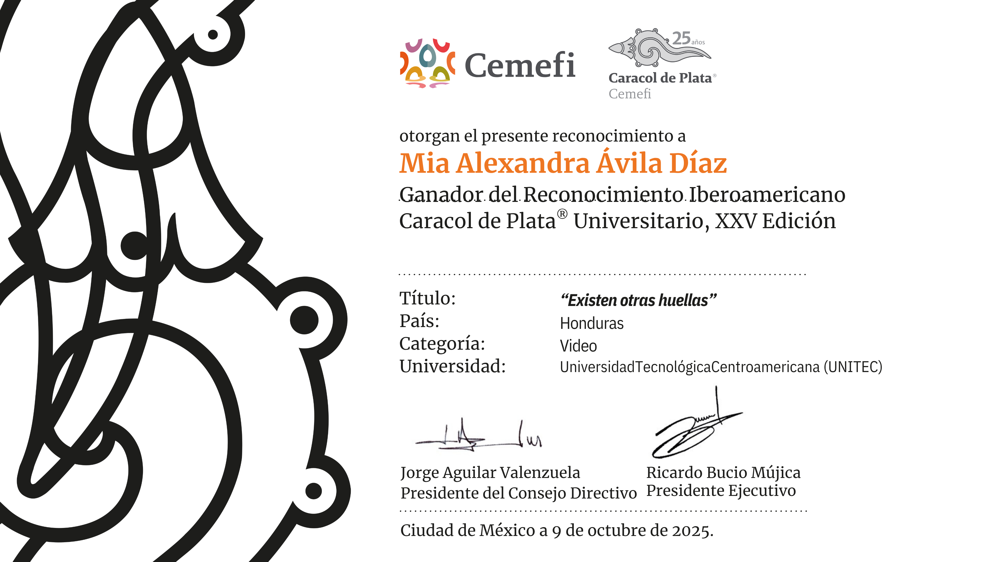

.png)
A girl paints with her fingers at home.
Project overview
A campaign about the footprints adults create before children can choose for themselves.
Existen Otras Huellas is a social awareness video about children’s digital footprints and the risks of sharenting. Through a visual metaphor, the campaign contrasts temporary traces of paint with the lasting impact of images shared online.
- Year
- 2025
- Category
- Social Awareness · Video
- Role
- Creative Direction · Art Direction · Video Production
- Software Used
- Adobe Premiere Pro · Adobe Photoshop · Adobe Illustrator
- Recognition
- Caracol de Plata® Universitario · XXV Edition
Watch the campaign
The final film.
A child’s painted fingerprints fade. Her digital footprint may not.
The concept
Paint fades. Digital footprints remain.
The child moves freely through a familiar domestic space, leaving playful traces of color behind. Her mother documents the moment and shares it online. The metaphor reveals another kind of footprint: one that can circulate, persist and escape the child’s control.
Colorful traces appear across paper and objects.
Her mother photographs and uploads the moment.
The paint disappears. The digital trace remains.
Film frames
Three moments. One lasting warning.

The image enters the digital space.
.jpg)
A visible footprint.

An invisible footprint remains.
Storyboard
The narrative before the camera rolled.
The storyboard established the progression from innocent play to digital exposure.

Scene 01
A child plays with art materials at home.

Scene 02
Her fingers create the first painted traces.

Scene 03
The marks spread across the table and paper.

Scene 04
The child leaves another trace while drinking.

Scene 05
The physical marks fade while the post remains.
Recognition
XXV
Caracol de Plata® Universitario.
Winner in the Video category, representing Honduras and Universidad Tecnológica Centroamericana (UNITEC).


.jpeg)
Existen Otras Huellas
Paint fades.Digital footprints remain.
Protect their privacy before sharing their story.